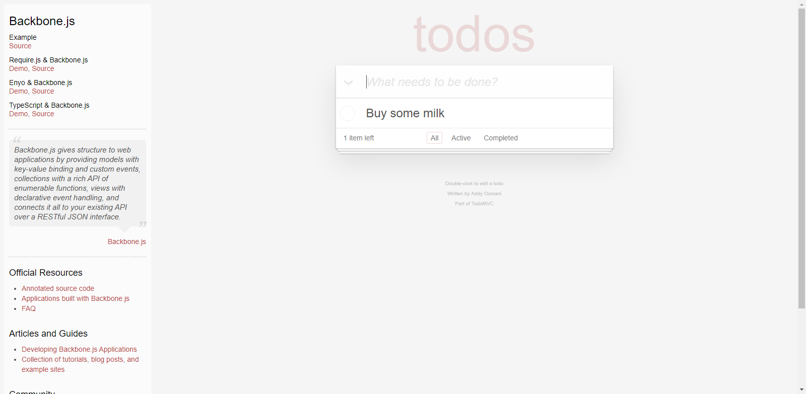
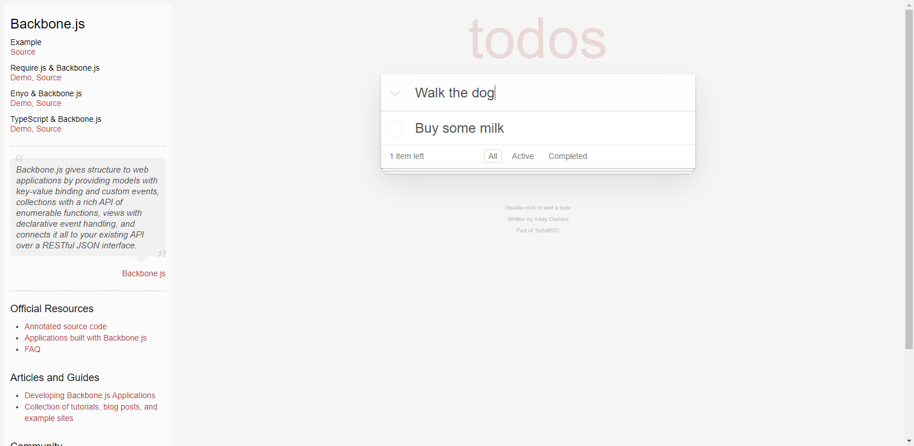
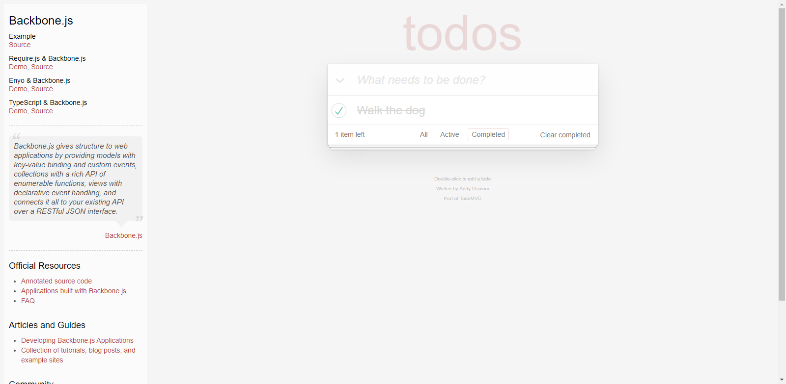
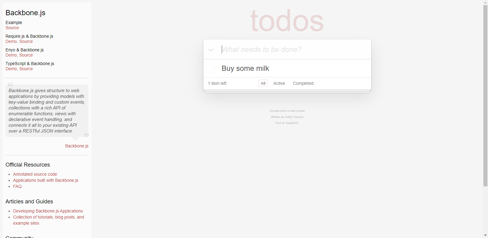
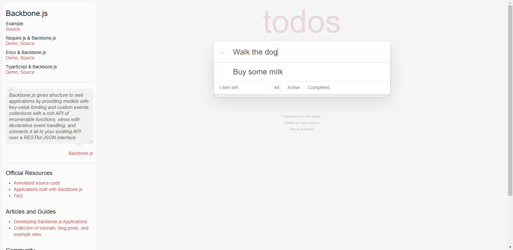
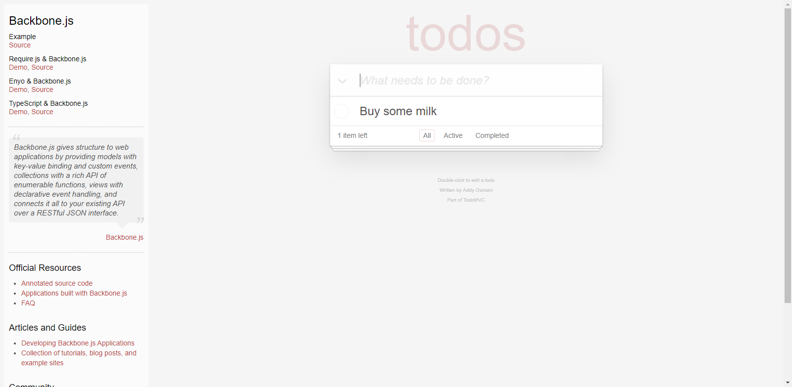
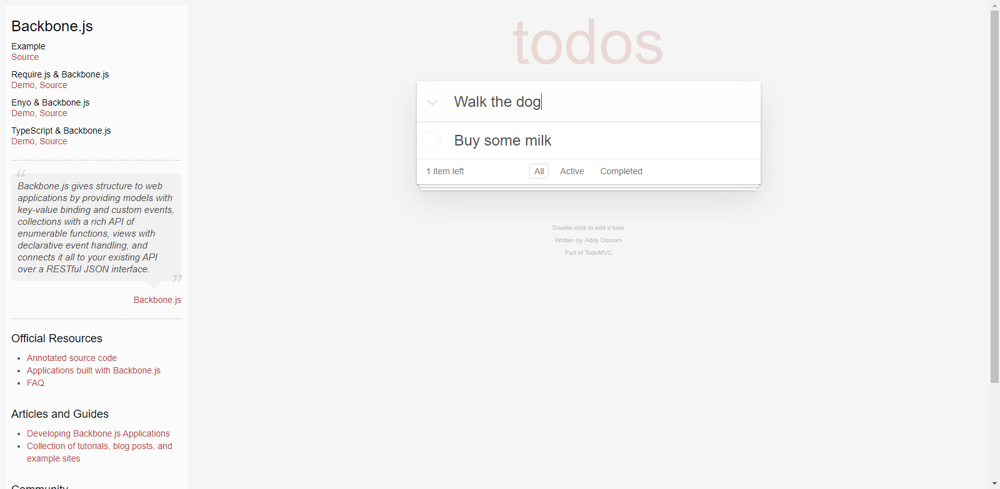

Home
>
Filtering Todos
>
View only completed items
> Screenshots
Overall Test Results
Requirements
Features
Report generated 03-08-2021 11:10
Filtering Todos
Feature
In order to make me feel
a sense of accomplishment
As a forgetful person
I want to be to
view all of things I have completed
Cucumber (tag)
Filtering (tag)
View only completed items
 
 SUCCESS" width="1600"/>

 



")